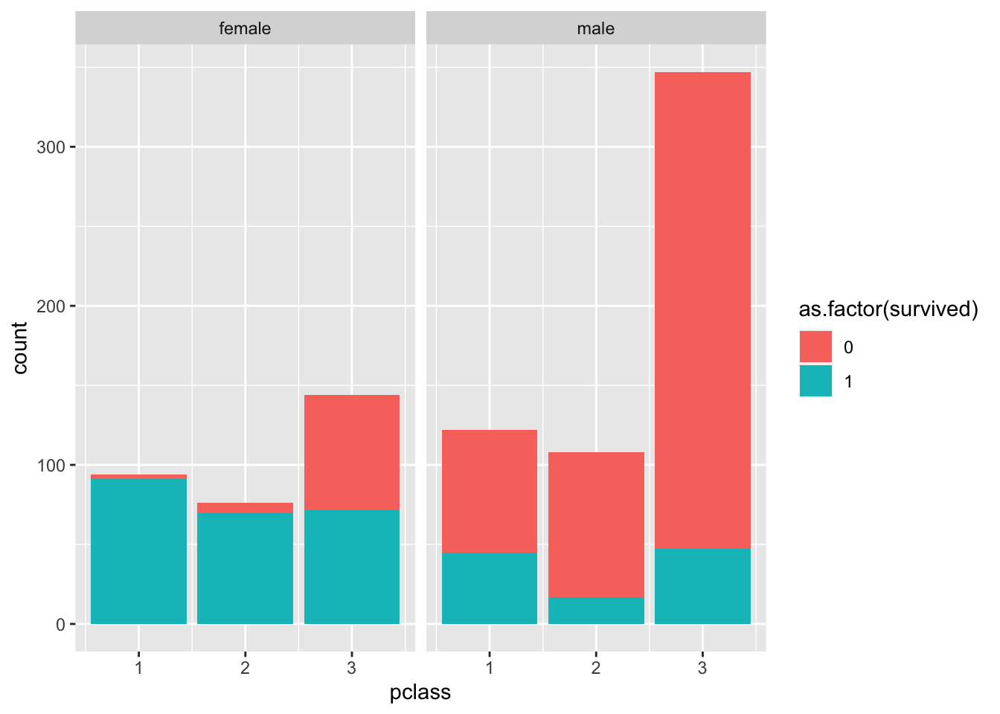

Chapter 3 Intro to R
Welcome to Econ 245 Guided Exercises! In these weekly documents, you will practice data wrangling with some hand-holding as well as some simple exercises to check your understanding. The purpose of these documents is the following:
- Make your homework easier.
- Make you a better coder by observing good code.
- Get hands-on practice with functions you will need to complete your assignments.
- Provide a reference document for each topic in the course.
We strongly suggest that you code along with the examples that we go through, although there will be times when copying and pasting can be useful (e.g., loading in a data set).
This week we will be focusing on a couple topics. The first will be doing common statistics in R, while the other will be an introduction to vectors, tibbles, and logical operators.
To begin, we will first load in the data sets that we want to use. We will be using the titanic_train data set from the titanic package. The titanic_train data set provides information on the fate of passengers on the fatal maiden voyage of the ocean liner “Titanic,” summarized according to economic status (class), sex, age and survival. Some import columns:
Survived: binary variable equal to 1 if the passenger survivedPclass: the passenger’s classname: the passenger’s nameSex: the sex of the passengerAge: the age of the passenger
Let’s load in the data set along with the packages we will be using. Quick aside: A package is a set of functions that are not defined in R by default. Many people create their own packages which have their own unique functions and data sets within. Packages are easy to install, and you only have to install a package one time and then it will be in your local machine for future use. We can install packages using the install.packages function. Important: installing a package does not mean it has been loaded. To be able to use the functions and data sets within the package, you must load the package by using the library function. Also important: a package needs to be loaded within each R session Hence, if you restart R or quit and reopen RStudio (which will restart R), you will need to re-load your packages. Observe:
## installing the necessary packages. The titanic package has the data set we want
## the tidyverse package has the functions we want
install.packages("titanic")
install.packages("tidyverse")## loading in the tidyverse and titanic packages
## remember: functions and data in the packages cannot be used unless loaded in!
## this must be done in each R session!
library(tidyverse)
library(titanic)
## loading in the titanic data set
titanic <- titanic_train3.1 Basic summary statistics
To start off, we will go through some basic summary statistics. For this section, we will focus on the Age column of the data set.
Let’s say we wanted to view only the Age column of the data. We could accomplish this using the $ attachment. Observe:
## viewing only the age column
titanic$AgeFrom this, we can see that there are many values in the Age column, some numbers, and others NA. NA is a value that R recognizes as “missing.” We will touch more on this in lectures and other assignments. For now, just think of it as a missing element.
Alternatively, we can get a “snapshot” of our data using the head function.
## using the head function to get a snapshot of the data
head(titanic)## PassengerId Survived Pclass
## 1 1 0 3
## 2 2 1 1
## 3 3 1 3
## 4 4 1 1
## 5 5 0 3
## 6 6 0 3
## Name Sex Age SibSp Parch
## 1 Braund, Mr. Owen Harris male 22 1 0
## 2 Cumings, Mrs. John Bradley (Florence Briggs Thayer) female 38 1 0
## 3 Heikkinen, Miss. Laina female 26 0 0
## 4 Futrelle, Mrs. Jacques Heath (Lily May Peel) female 35 1 0
## 5 Allen, Mr. William Henry male 35 0 0
## 6 Moran, Mr. James male NA 0 0
## Ticket Fare Cabin Embarked
## 1 A/5 21171 7.2500 S
## 2 PC 17599 71.2833 C85 C
## 3 STON/O2. 3101282 7.9250 S
## 4 113803 53.1000 C123 S
## 5 373450 8.0500 S
## 6 330877 8.4583 QTaking a look at your data before you start doing analysis is imperative, and the head function gives you a concise preview of most of your columns.
Now, let’s attempt some basic summary statistics. For starters, we will use the mean, sd, and var functions to get the mean, standard deviation, and variance of the Age column respectively.
## finding the mean of the age column
mean(titanic$Age)## [1] NAWe get a value of NA as our mean of the Age column, despite our knowledge that the Age column contains many different age values. Let’s use the ? to get more information on the mean function to see what may be causing this.
?meanIf we look at some of the arguments that the mean function takes, we can see that one of them is called na.rm. The na.rm function is initially defaulted to FALSE. But what does na.rm do? If we set the na.rm argument to TRUE, then na.rm will remove the NA values before the computation proceeds. This is exactly what we need to get a numerical answer for our mean. Before, R was trying to compute missing values into our mean function which does not make any sense (hence the nonsensical answer).
## trying this again using the na.rm = T argument
mean(titanic$Age, na.rm = T)## [1] 29.69912Now we finally get our desired result. It is important to check your column values using the head function if you ever get NA as a statistic to make sure your whole column is not solely missing values. Now it’s time to try it yourself.
3.1.1 Exercise
- Using the
sdandvarfunctions, find the standard deviation and variance of theAgecolumn. Check your solutions at the end of the document.
3.2 Basic histogram
Another tool to give you an idea of the distribution of your data is the hist function. The hist function creates a histogram of your data. Suppose we are interested in the distribution of ages on the titanic. We could quickly get an accurate depiction by graphing a histogram of the column.
## graphing a histogram of the Age column
hist(titanic$Age)
3.2.1 Exercise
- Make a histogram of the
Farecolumn. Change the title of the histogram to “Distribution of Fare.” Do you notice anything interesting?
3.3 Creating Vectors
R is a vectorized computer language. This means that when you perform a function, it performs it on an entire vector of values, rather than value-by-value. The vectorization of R allows us to perform functions on an entire column of the spreadsheet, rather than going cell-by-cell. In the previous example with the titanic data set, we took the mean of an entire column of values by simply using the mean function rather than iterating through each element of our column, adding up the values, and dividing by the total.
To get a better understanding of vectors, it is useful to create them yourself. Let’s create a vector using the c function. To create a vector, we need a few things:
- If we want to refer to our vector later, we need to name it.
- We need to give the vector elements.
To begin, we will investigate (1).
## creating a vector but not saving it
## the vector has 4 elements
c(1,3,4,10)## [1] 1 3 4 10Here, we created a vector of four values: 1, 3, 4, and 10. Notice at the top right of RStudio that our Global Environment did not change. This is because we did not save the vector. To save the vector, we need to give it a name. For our purposes, the vector will be named first_vector.
## creating a vector and naming it to save
first_vector <- c(1,3,4,10)Once you run this line, you should see that your Global Environment has changed. It should now have the first_vector along with a small description of what it contains (e.g. 1, 3, 4, 10). The purpose of saving vectors (or saving anything) is so that we can refer to it later. Instead of creating a new vector of 1, 3, 4, and 10 each time we want to use it, we can call it by typing its name.
## calling our vector to observe its elements
first_vector## [1] 1 3 4 103.3.1 Exercise
- Create two vectors called
my_own_vector1andmy_own_vector2. Each vector should have four numbers in them. Use whichever numbers you like.
3.4 Comparing Vectors
Vectors can be compared to values and other vectors. To perform this task we use logical operators. The logical operators are similar to what you learned in elementary math: greater than, equal to, or not equal to. In R, we use the following for logical operators for comparisons:
<greater (less) than<=greater (less) than or equal to==equal to!=not equal to
The best way to understand how logical operators work is to see them in action. As an example, we will compare our first_vector to the value 7.
## which elements are greater than 7?
7 > first_vector## [1] TRUE TRUE TRUE FALSE## ordering does not matter
first_vector < 7## [1] TRUE TRUE TRUE FALSENotice that R returned logical values TRUE and FALSE. R went through each element of our vector and checked whether the element was less than the number 7. According to our output, the first three elements in our vector were less than the number 7 (hence TRUE) and the last element was not (hence FALSE). We can evaluate the other logical operators as well:
## checking if each element is not equal to 7
first_vector != 7## [1] TRUE TRUE TRUE TRUE## checking if each element is equal to 7
first_vector == 7## [1] FALSE FALSE FALSE FALSEAs a brief aside, observe the last line of code we wrote to check whether first_vector was equal to 7. Notice that the “equal to” operator is == rather than =. This is because == checks the equivalence of components, while = is an assignment character similar to <-. In fact, <- and = serve the exact same purpose for assignment.
## assigning our first_vector to the value 7
## we are not checking whether it is equal to 7
first_vector = 7
## showing what our first_vector contains after assignment
first_vector## [1] 7The R community typically uses <- as assignment rather than =. It does not matter which one you use when assigning a variable name, but this class will use the <- assignment as it is the the most frequent one you see online.
3.4.1 Exercise
- Using your
my_own_vector1andmy_own_vector2, compare each of these vectors using the 4 logical operators.
3.5 Creating a tibble
A tibble is essentially a collection of columns with names, similar to an excel spreadsheet. If you are familiar with other computer languages, it is a special type of data frame that has particularly user-friendly characteristics such as making previewing data easier. To demonstrate this, we will observe the titanic data set we were working with earlier. Enter and run the following code:
## this is currently a data frame - it does not have nice features to view the data or see the data types
## the code output is suppressed here to make this document shorter
titanicThe titanic data set is currently a data frame, and hence, it is difficult to view. Let’s change it to a tibble:
## changing the titanic data frame to a tibble
titanic <- tibble(titanic)Now that we’ve changed titanic to a tibble, it has nicer previewing features. Observe what happens when we preview the data:
## previewing the data
titanic## # A tibble: 891 × 12
## PassengerId Survived Pclass Name Sex Age SibSp Parch Ticket Fare Cabin
## <int> <int> <int> <chr> <chr> <dbl> <int> <int> <chr> <dbl> <chr>
## 1 1 0 3 Braun… male 22 1 0 A/5 2… 7.25 ""
## 2 2 1 1 Cumin… fema… 38 1 0 PC 17… 71.3 "C85"
## 3 3 1 3 Heikk… fema… 26 0 0 STON/… 7.92 ""
## 4 4 1 1 Futre… fema… 35 1 0 113803 53.1 "C12…
## 5 5 0 3 Allen… male 35 0 0 373450 8.05 ""
## 6 6 0 3 Moran… male NA 0 0 330877 8.46 ""
## 7 7 0 1 McCar… male 54 0 0 17463 51.9 "E46"
## 8 8 0 3 Palss… male 2 3 1 349909 21.1 ""
## 9 9 1 3 Johns… fema… 27 0 2 347742 11.1 ""
## 10 10 1 2 Nasse… fema… 14 1 0 237736 30.1 ""
## # … with 881 more rows, and 1 more variable: Embarked <chr>As you can see, we now have a helpful snapshot of our data that displays far nicer than when the titanic data set was a data frame: we can see multiple columns, we see only the first 10 rows, and we can see the data types of each column nested under the column names (for instance, PassengerID is an <int> which stands for integer).
Tibbles are what we will be working with most frequently in this course. While it is generally uncommon to manually create a tibble, it is a great exercise to get a better understanding of how they work. First, we will create another two vectors and recreate our first_vector with its original values:
## reassigning original values to the first_vector
first_vector <- c(1,3,4,10)
## new vector
second_vector <- c(1,1,2,2)Now let’s create a tibble that has two columns. Our first column will be the values of first_vector and our second column will be the values of second_vector. We will use the tibble function which takes vectors as arguments. Similarly to vectors, we need to make sure that we save our tibble by assigning it to a name.
## creating a tibble named first_tibble with two columns
first_tibble <- tibble(first_vector, second_vector)Since we assigned this tibble a name, we can now see in our Global Environment that it has saved with our desired name. If we click first_tibble in the Global Environment, it will give us a spreadsheet view of our tibble. We can also accomplish this by using the View function.
## Viewing our tibble in spreadsheet form
View(first_tibble)Notice that the tibble has two columns which are named identically to our vectors. As shown earlier using the titanic data, we can also perform actions on this tibble.
## finding the mean of the first_vector column
## I did not need to set the na.rm = T since no NA values, but did it anyways
mean(first_tibble$first_vector, na.rm = T)## [1] 4.5Alternatively, we could create a tibble with column names that differ from our vector names. In the previous example, our first_tibble has two columns with the names defaulted to first_vector and second_vector. However, we can initialize different names to the column by adding a little more syntax to our tibble function. Suppose I want to make a new tibble named second_tibble with the first_vector and second_vector as columns. However, I want the first_vector column to be named age and the second_vector column to be named gender.
## Creating a new tibble with two columns with the names "age" and "gender"
second_tibble <- tibble("age" = first_vector, "gender" = second_vector)
## showing the result
second_tibble## # A tibble: 4 × 2
## age gender
## <dbl> <dbl>
## 1 1 1
## 2 3 1
## 3 4 2
## 4 10 2One other important point: Notice how in the tibble function we used = rather than <- for assigning names. It is important that you use = for assigning arguments rather than <-. Try using <- in the tibble argument, and see how it fails to properly do what we want.
3.5.1 Exercise
- Using your vectors
my_own_vector1andmy_own_vector2that you created in the earlier exercise, create a tibble using thetibblefunction.